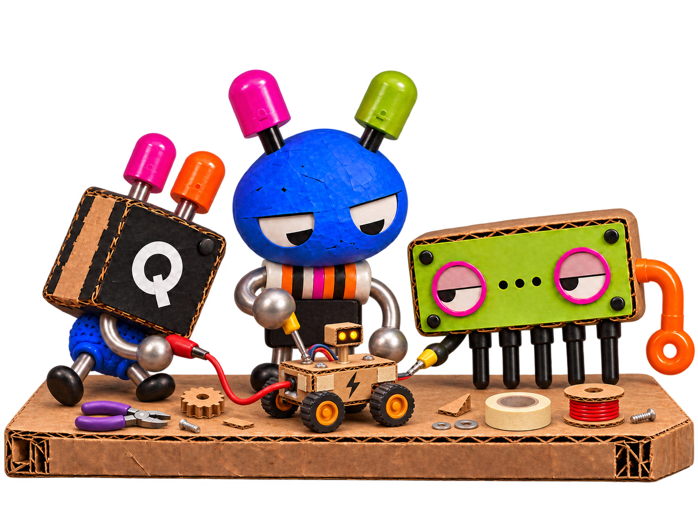
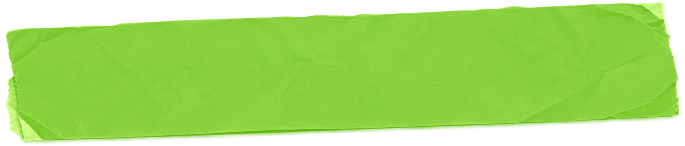
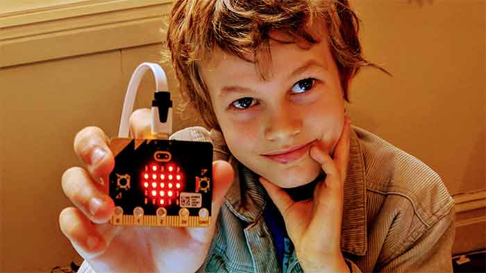
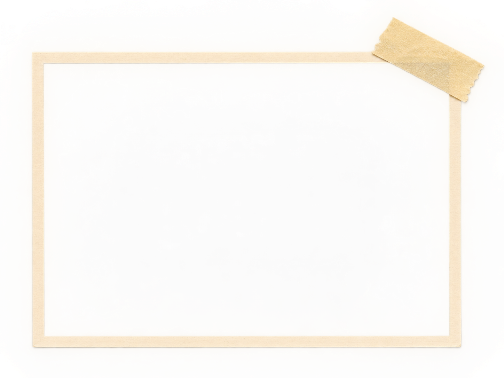

ALL LEVELS
- Beginners get a starting point.
- Experienced makers get a challenge.





Games, robots, electronics, digital worlds and more. Beginners get help getting started. Children with experience get room to take an idea further.


Children aged 7–12. Complete beginners, confident coders and everyone in between.
Some arrive having never written a line of code. Others have built games at home, played with electronics or taught themselves a thing or two.
We don't expect everyone to start at the same place. We find out what each child can already do and give them a useful next challenge.
Games, robots, AI experiments, electronics, websites, digital worlds and things that respond to light, sound or movement.
A child might build a game with levels and sound effects, make a robot react to its surroundings or wire up a little computer to do something unexpected.
We use Scratch, Python, JavaScript, Raspberry Pi, microcontrollers, sensors and plenty of things with wires. We choose the tools to suit the project, not the other way around.
Projects change with the technology, and with what the children are ready to make.
 Codey Rocky
Codey Rocky
Making gives learning a reason.
It's one thing to follow instructions and get something working. It's much more interesting to understand it, change it, break it, fix it and make it your own.
Children pick up coding, logic, design and problem-solving while trying to make something they actually care about.
We like hearing, “What happens if I try this?” Particularly when nobody knows the answer yet.


GameGoSmall groups, practical help and more independence as children find their feet.
Beginners start with a guided project. Children with more experience can take an idea further or work on something of their own. Sometimes the group starts together. Other days, everybody is making something different.
We keep groups small, with around one tutor for seven children, so there's someone to ask when things don't work and room to try things independently. We've been teaching creative technology since 2015, with people who know their way around real code.
It's an active studio, not a silent one. If your child has particular support needs or finds busy environments difficult, tell us when enrolling. We can talk through which group might suit them.
 micro:bit
micro:bit
Upstairs in Marrickville, Sydney.
Level 1, 230 Marrickville Road, next to Pizza Hut, near Victoria Road. Our studio is full of computers, robots, electronics, materials and projects in various stages of becoming something.
Every child has their own computer. We provide all the equipment, so there's no need to bring a laptop.
 Raspberry Pi
Raspberry Pi
75 minutes each week during school term. Children get to return to their projects, pick up new skills and see how far an idea can go. New children can join during a term when there's a suitable place.
See class times and enrol →A full day of making, with different projects on different days. Come for one day or several. Camp runs 9:30 am–3:30 pm, with drop-off from 9 am, pickup by 4 pm and optional extended hours.
See camp details and book →Both options welcome beginners. Enrolment takes about two minutes and there's no payment at the form stage. We confirm the booking details with you afterwards.